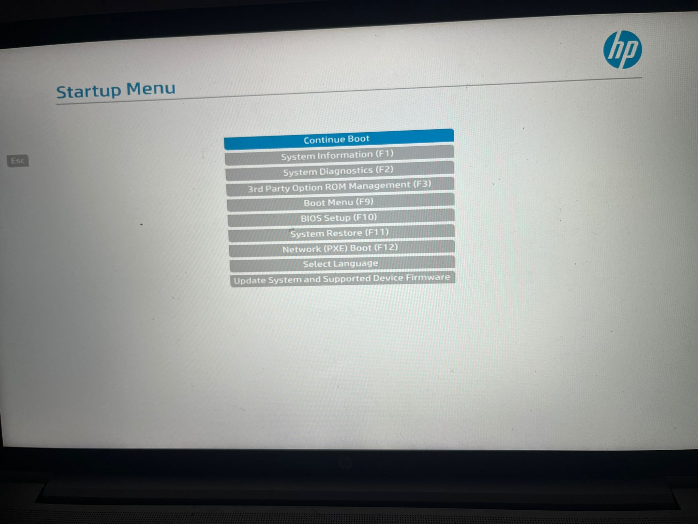
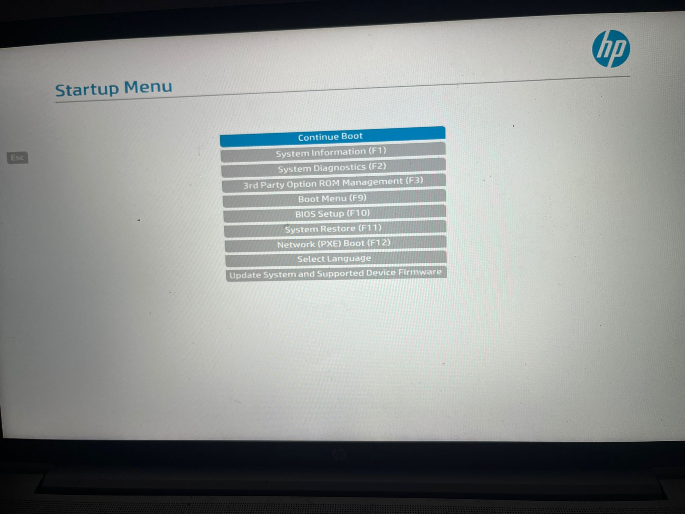

Installation Guide
Using the installer
Downloading the Installer
To install Redrose Linux, the first step is to download the disk image. The image size is approximately 1.5-2 GB, smaller than most standard distributions.
IT IS STRONGLY ADVISED TO FIRST CHECK THE INTEGRITY OF THE DISK IMAGE. THE OFFICIAL SHA256 CHECKSUM IS ON THE GITHUB RELEASE PAGE, OR THIS, LESS UPDATED CHECKSUM:98dc028d17556a1c8e630e7fdf141bea9c7e75b14b9414646aa13a35c56d0c17
To verify the ISO:
The next steps assume your disk image is at /Downloads/redroselinux.iso.
-
On Linux: open a terminal, navigate to your Downloads folder, and run:
sha256sum redroselinux.iso
Compare the output with the checksum above. If they match, the download is correct. -
On Windows: open PowerShell, navigate to your Downloads folder, and run:
Get-FileHash .\redroselinux.iso -Algorithm SHA256
Compare the resulting hash with the checksum above. Matching values mean the ISO is intact.
How to fix that? Simply re-download from official sources.
Flashing the disk
After downloading, flash the disk image onto a USB drive or another removable drive. Connect the drive before proceeding.
On Windows: download Rufus and follow the instructions. Select the downloaded disk image and your removable drive, then click START.
On Linux: run:
sudo dd if=~/Downloads/redroselinux.iso of=/dev/sdX bs=4M status=progress && sync
Replace /dev/sdX with your drive's device name. Replace ~/Downloads/redroselinux.iso with your ISO directory.
THIS WILL PERMANENTLY DELETE ALL CONTENT FROM THE DRIVE.
Booting the Installer
Reboot and press one of the following keys to access BIOS/UEFI:
Esc, Enter, F9, Del.
Select your removable drive as the boot device.
Examples:
 

Installing
Once booted, the installer starts automatically. Wait for the setup interface.
Follow the on-screen instructions. Quick reference:
- Username - your personal user account name
- Root - the system administrator account
- Console keymap - keyboard layout (e.g., us, uk, sk)
- Timezone - Region/City format (e.g., Europe/Bratislava)
- Locale - system language (e.g., en_US.UTF-8)
After these steps, the installer finishes automatically.
Restarting installation
To restart installation, press Ctrl + C. To start again, type:
./redroselinuxinstaller
If that does not work, run:
chmod +x ./redroselinuxinstaller
Troubleshooting
Removable drive not detected
Try a different drive or port, then reboot and repeat.
Problems with booting the drive
Turn off Secure Boot. Redrose Linux currently does not support it.
Unable to access BIOS/UEFI
Check your device manual for the correct key. If you see no menu, BIOS/UEFI may be locked with a password. Consult a repair shop or your organization.
Our documentation is open source. You can help by contributing.